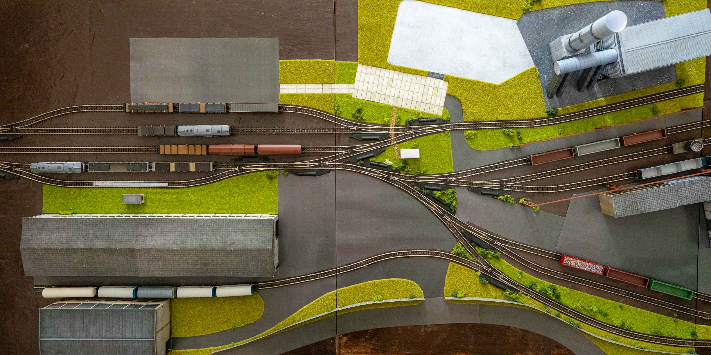

Kolejiště
železáren v měřítku 1:160
Kolejiště je inspirované skutečnými železárnami, jejich vlečkovým provozem a reálným oběhem vozů mezi jednotlivými částmi areálu.
Prozkoumat železárny ↓ŽELEZÁRNY
Průmyslový areál
v měřítku 1:160.
Základ kolejiště tvoří dva moduly s rozsáhlým seřadištěm a několika menšími provozy. Další moduly na ně navazují a postupně rozšiřují areál o další výrobní a skladovací provozy.
Provoz vychází z principů skutečných hutních vleček – vozy se rozřazují, přesouvají mezi jednotlivými provozy, zásobují elektrickou pec a odvážejí hotové výrobky. Každá kolej, vůz i lokomotiva tak mají v areálu svůj konkrétní účel.
Poznat projekt ↗STAVBA
Jak vznikají
železárny.
Stavba začíná výrobou rámů jednotlivých modulů a pokračuje pokládkou kolejí a výhybek. Postupně přibývají budovy, technologie a další detaily, které dávají celému areálu jeho výslednou podobu.
V části Stavba je zachycen postup jednotlivých modulů od prvních konstrukčních prací až po dokončování jednotlivých částí železáren.
Sledovat stavbu ↗MODULOVÉ KOLEJIŠTĚ